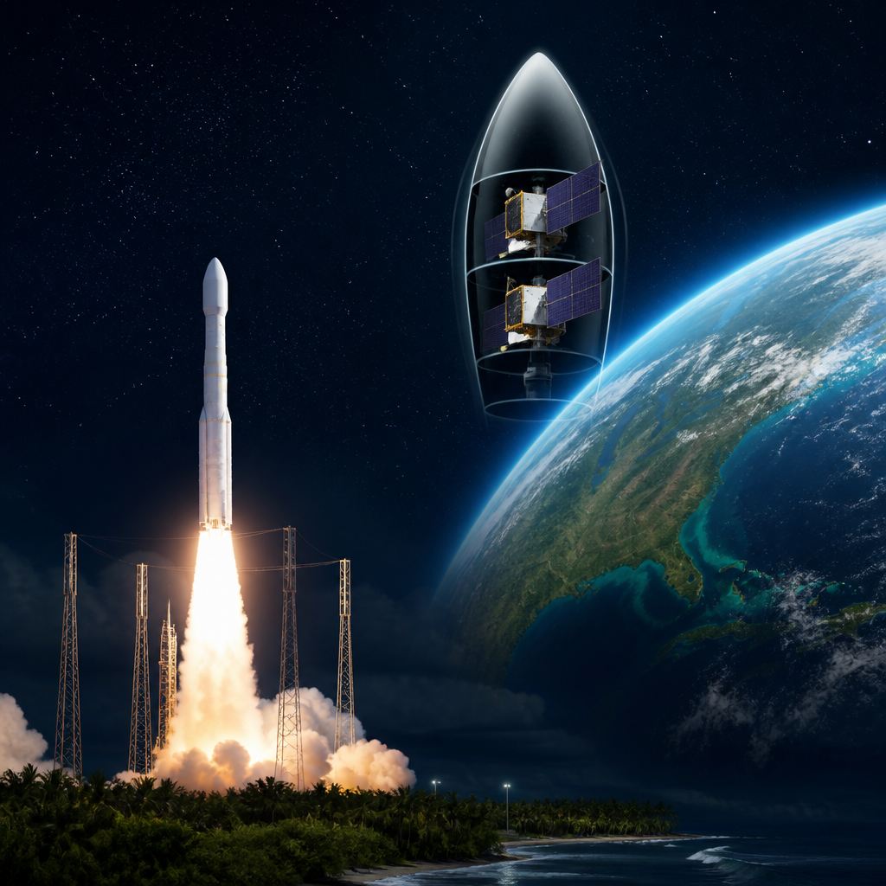
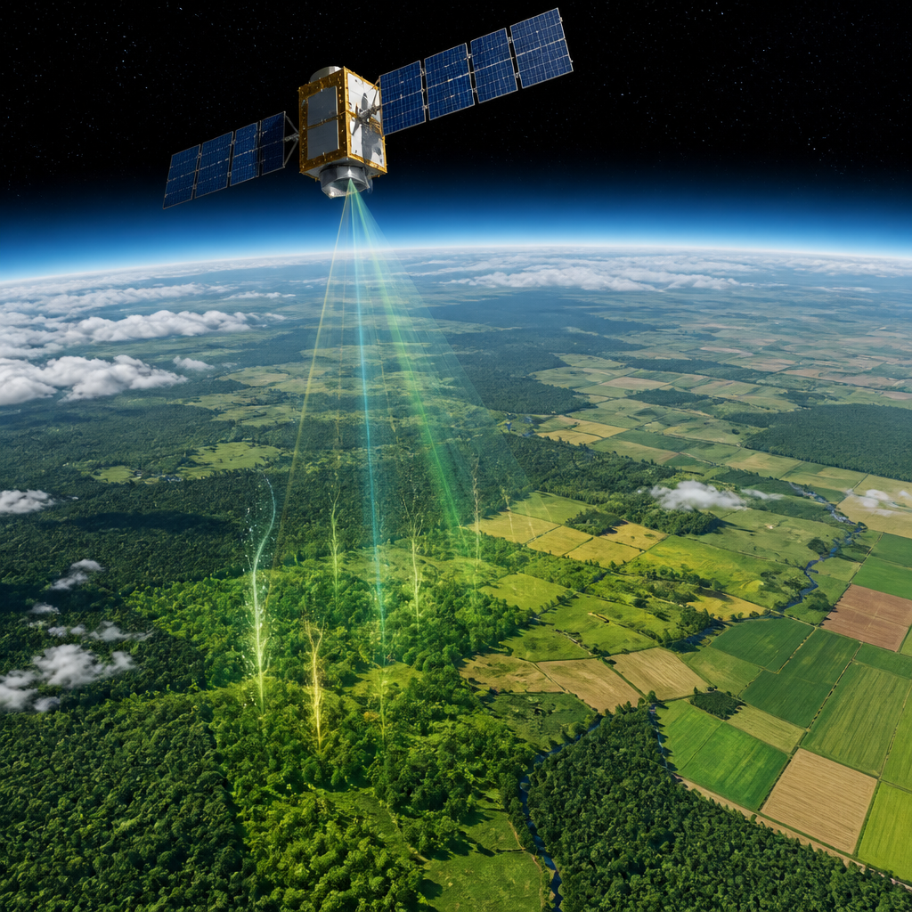

Le due missioni partiranno a bordo di Vega-C e offriranno dati sulla vegetazione e sull’ambiente terrestre.
FLEX e Copernicus Sentinel-3C sono programmati per partire insieme il 15 settembre 2026 a bordo di un razzo Vega-C, nel volo VV30. Il decollo è previsto alle 03:21, ora legale dell’Europa centrale, dallo spazioporto europeo nella Guyana francese. Sono due satelliti di osservazione della Terra, cioè missioni che raccolgono dati sul nostro pianeta dallo spazio, ma hanno compiti diversi e complementari: FLEX è dedicato in particolare alla risposta della vegetazione alle condizioni ambientali, mentre Sentinel-3C proseguirà la raccolta di dati su oceani, terre emerse, ghiacci e atmosfera.
Dopo il lancio notturno in Sud America, l’Agenzia spaziale europea, la Commissione europea e i partner delle missioni organizzeranno a Darmstadt, in Germania, un incontro per media e ospiti. Il programma includerà la riproduzione del lancio, aggiornamenti dalle sale di controllo dei satelliti e interventi dedicati alle nuove osservazioni che le missioni metteranno a disposizione di utilizzatori in Europa e nel resto del mondo.
FLEX, abbreviazione di Fluorescence Explorer, è la più recente missione Earth Explorer dell’ESA ed è il primo satellite progettato per misurare dallo spazio l’attività fotosintetica. La fotosintesi è il processo con cui le piante usano la luce per produrre energia. Per farlo, il satellite è dotato del Fluorescence Imaging Spectrometer, uno spettrometro per immagini: uno strumento che analizza la luce e ne ricava informazioni distribuite sul territorio.
Lo strumento di FLEX rileverà la debole fluorescenza emessa dalla vegetazione. La fluorescenza è una tenue emissione luminosa che, in questo caso, permette di osservare l’attività delle piante. Queste misure offriranno informazioni sulla salute della vegetazione, sulla produttività degli ecosistemi e sugli effetti del cambiamento climatico sulla biosfera terrestre. La biosfera è l’insieme delle parti della Terra dove è presente la vita.
La missione potrà inoltre aiutare a comprendere come la vegetazione risponde allo stress ambientale e al mutare delle condizioni climatiche. L’obiettivo non è quindi soltanto osservare dove si trovano le aree vegetate, ma ottenere nuovi elementi su come funzionano e reagiscono gli ecosistemi.

Copernicus Sentinel-3C è il terzo satellite della serie Sentinel-3. La missione continuerà una raccolta di lungo periodo di dati ambientali essenziali sugli oceani, sulle terre emerse, sui ghiacci e sull’atmosfera. I dati della missione sono destinati a sostenere le previsioni meteorologiche, il monitoraggio del clima, la gestione ambientale e la ricerca scientifica.
Sentinel-3 fa parte di Copernicus, il programma di osservazione della Terra dell’Unione europea. È una missione condivisa dalla Commissione europea, dall’ESA e da EUMETSAT, l’Organizzazione europea per l’esercizio dei satelliti meteorologici. L’ESA sviluppa e acquisisce i satelliti Sentinel-3; EUMETSAT gestisce il sistema Sentinel-3 nella fase operativa ordinaria e fornisce dati e servizi della missione agli utilizzatori in tutto il mondo.
Il decollo di FLEX e Sentinel-3C è previsto il 15 settembre 2026 con un Vega-C. FLEX studierà l’attività fotosintetica attraverso la fluorescenza della vegetazione. Sentinel-3C raccoglierà dati di lungo periodo su oceani, terre, ghiacci e atmosfera. Dopo il lancio, le squadre seguiranno la fase di lancio e primo inserimento in orbita, detta LEOP: è il periodo iniziale in cui vengono avviati e controllati i satelliti dopo la partenza.
L’incontro di Darmstadt seguirà proprio le prime attività dopo il decollo. Sono previsti aggiornamenti dalle vicine sale di controllo dell’ESA durante la fase LEOP delle due missioni, oltre a una visita alla sala di controllo principale, compatibilmente con le esigenze operative. È prevista anche, su richiesta, una visita a EUMETSAT, che si trova nelle vicinanze e prenderà in carico le operazioni di Sentinel-3 nella fase ordinaria.
Questo articolo l'hai letto sul blog di Meteo Radar: un'app che ti mostra da dove vengono i numeri, invece di limitarsi a dartelo. E ogni mattina ne trovi uno nuovo come questo.